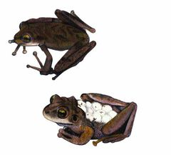
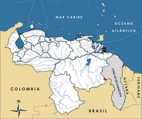

Stefania riveroi
| Rana Stefania de Rivero | |
|---|---|
|  | |
| Riesgo de extinción | |
 Vulnerable (UICN) | |
| Clasificación científica | |
| Reino: | Animalia |
| Filo: | Chordata |
| Clase: | Amphibia |
| Orden: | Anura |
| Familia: | Hemiphractidae |
| Género: | Stefania |
| Especie: | Stefania riveroi |
| Nombre binomial | |
|
Stefania riveroi Señaris, Ayarzaguena et Gorzula, 1997 | |
| Distribución | |
|
 Mapa de distribución de Stefania riveroi | |
Contenido
Información de Evaluación
- Categoría y Criterio Regional: Vulnerable D2
- Fecha de Evaluación Regional: 2015
- Evaluadores: Jesús Morales-Campos y Ariany García-Rawlins
- Categoría y Criterio Global: Vulnerable D2
Justificación
Evaluaciones Previas
1999: No Evaluado (NE)
2008: Vulnerable (VU)
Información General
Nombres comunes
Rana estefanía del Yuruaní, rana estefanía de Rivero, Yuruani stefania tree frog, Rivero carrying frog, Yuruani marsupial frog.
Notas taxonómicas
Sinónimos
Descripción
Actualmente el género Stefania reúne 19 especies distribuidas en las tierras medias y altas de la región de Guayana en Venezuela, Guyana y Brasil. Stefania riveroi es una rana relativamente grande, los machos alcanzan los 57 mm mientras que las hembras, de mayor tamaño, pueden llegar hasta los 70 mm. Su piel dorsal es granular, con algunos tubérculos redondos y chatos alrededor de la región timpánica. La cabeza es más ancha que larga y presenta crestas cefálicas moderadas; el dedo I manual es más largo que el II, con los discos manuales grandes, redondeados, y carece de palmeadura entre los dígitos de las manos siendo basal en los pies. Exhibe una coloración dorsal de diferentes tonalidades que van desde un color ocre arena hasta el marrón oscuro, con o sin un patrón dorsal de uves invertidas (Ʌ) más oscuras; ventralmente es marrón claro. Además de la información ecológica que se ofrece en la descripción original de la especie (Señaris et al. 1997), diversos trabajos detallan aspectos de los cantos e historia de vida de esta rana (Mägdefrau 1991, Gorzula y Señaris 1999, Sinsch y Juraske 2006). Kok et al. (2012) y Salerno et al. (2012), presentan análisis moleculares recientes de algunas Stefania, incluyendo a S. riveroi (Salerno et al. 2012).
Distribución
Especie endémica de la cima del Yuruaní-tepui, en el estado Bolívar, a 2300 m de elevación (Señaris et al. 1997). Este tepuy tiene un área de cima de tan solo 4,4 km2, y está dominado por superficies de roca desnuda. Stefania riveroi tiene actividad nocturna y está asociada a las rocas adyacentes a cuerpos de agua, pero también se le puede observar en grietas y cuevas; de día se refugia en hendiduras o debajo de piedras, y los juveniles en los tubos de bromelias terrestres.
- Sistema: Terrestre, Dulceacuícola
- Bioregión:
- Intervalo altitudinal (m): 2300
- Endémica: Sí
Situación
Se desconoce su estatus poblacional actual. Al igual que el resto de las especies del género Stefania, S. riveroi lleva los huevos en la espalda y se tiene información de una hembra con once huevos, lo que se considera una fecundidad baja. Con base en el hábitat conocido de la especie, su distribución potencial abarcaría menos de cinco kilómetros cuadrados. Está en la categoría Vulnerable de Extinción tanto por la Evaluación Global de los Anfibios, como por la Unión Internacional para la Conservación de la Naturaleza (Barrio-Amorós 2004a, IUCN et al. 2006, IUCN 2014).
- EOO (km2): Temporalmente sin información
- AOO (km2): <20
- Tendencia Poblacional: Estable
Amenazas
El hábitat de esta especie está bien conservado y el acceso para el turismo a la cima del Yuruaní-tepui es muy limitado. Pese a ello, Stefania riveroi tiene un área de distribución (extensión de presencia) muy pequeña, que junto a su relativamente baja fecundidad y a las perturbaciones asociadas al cambio climático (incremento de la temperatura, sequías más prolongadas y acentuadas e incendios forestales) (Nogué et al. 2009) o a cualquier otra catástrofe natural, la hacen particularmente susceptible de disminuciones poblacionales, o inclusive de extinción, de manera repentina.
Conservación
No se ha tomado medida alguna para su conservación. Su área de distribución actual y potencial está protegida por el parque nacional Canaima. Además, el Yuruaní-tepui se ha considerado como Área Bajo Régimen de Administración Especial (Abrae), amparado mediante el decreto Monumentos Naturales «Tepuyes», pero aún no se ha evaluado cuán efectiva es esta área para la protección de la especie. Las acciones de conservación sugeridas estarían orientadas a aumentar el conocimiento acerca de la biología y ecología de Stefania riveroi.
Autorías
Autores originales
Josefa Celsa Señaris y Fernando J. M. Rojas-Runjaic
Colaboradores
Ilustrador
Ximenamaria Rausseo
Referencias
- Barrio-Amorós, C. L. (2004a). Amphibians of Venezuela: systematic list, distribution and references, an update. Revista de Ecología Latinoamericana 9(3): 1-48.
- Gorzula, S. y Señaris, J. C. (1999). "1998". Contribution to the herpetofauna of the Venezuelan Guayana. Part I. A data base. Scientia Guaianae 8: xviii+270+232.
- IUCN, Conservation International y NatureServe (2006). Global Amphibian Assessment.
- IUCN (2014). The IUCN Red List of Threatened Species. Version 2014.3. Accesible en www.iucnredlist.org.
- Mägdefrau, H. (1991). Rufe, Paarung und Eiablage bei einer Froschart der Gattung Stefania (Rivero, 1966). Herpetofauna 13: 7-13.
- Nogué, S., Rull, V. y Vegas-Vilarrúbia, T. (2009). Modeling biodiversity loss by global warming on Pantepui, northern South America: projected upward migration and potential habitat loss. Climatic Change 94(1): 77-85.
- Rodríguez, J. P. y Rojas-Suárez, F. (1999). Libro Rojo de la Fauna Venezolana, segunda edición. PROVITA, Fundación Polar. Caracas. 444 pp.
- Rodríguez, J. P. y Rojas-Suárez, F. (Eds.) (2008). Libro Rojo de la Fauna Venezolana, tercera edición. Provita y Shell Venezuela, S. A. Caracas, Venezuela. 364 pp.
- Salerno, P. E., Ron, S., Señaris, J. C., Rojas-Runjaic, F., Noonan, B. P. y Cannatella, D. C. (2012). Ancient Tepui summits harbor young rather than old lineages of endemic frogs. Evolution 66(10): 3000-3013.
- Señaris, J. C., Ayarzagüena, J. y Gorzula, S. (1997). "1996". Revisión taxonómica del género Stefania (Anura; Hylidae) en Venezuela con la descripción de cinco nuevas especies. Publicaciones de la Asociación Amigos de Doñana 7: 1-56.
- Señaris, J. C. y Rojas-Runjaic, F. J. M. (2015). Rana estefanía del Yuruaní, Stefania riveroi. En: J.P. Rodríguez, A. García-Rawlins y F. Rojas-Suárez (eds.) Libro Rojo de la Fauna Venezolana. Cuarta edición. Provita y Fundación Empresas Polar, Caracas, Venezuela. Recuperado de: animalesamenazados.provita.org.ve/content/rana-estefania-del-yuruani Vie, 20/04/2018 - 12:38
- Sinsch, U. y Juraske, N. (2006). Advertisement calls of hemiphractine marsupial frogs: IV. Stefania spp. Proceedings of the 13th Congress of the Societas Europaea Herpetologica. Páginas: 159-162.